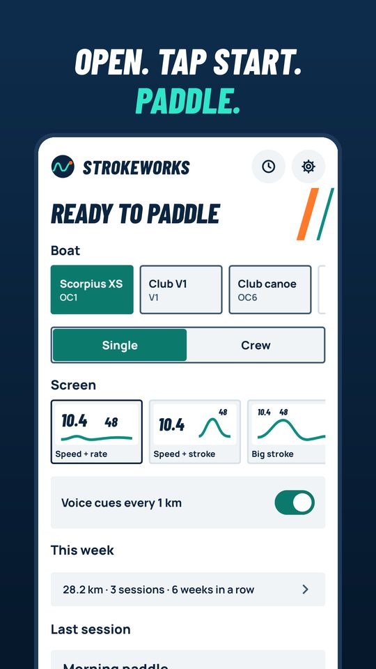
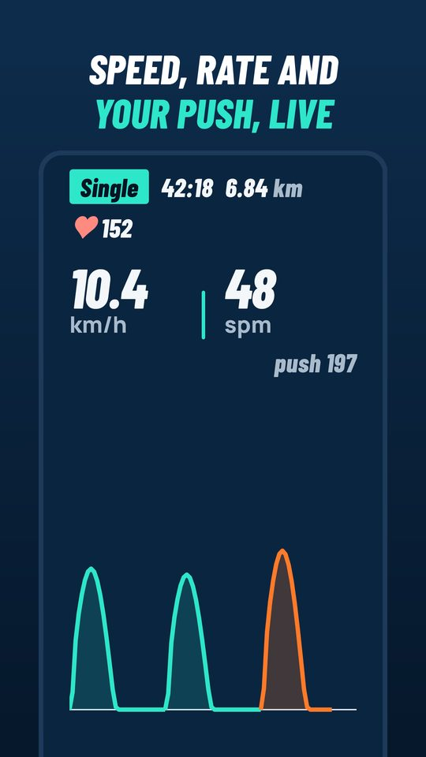
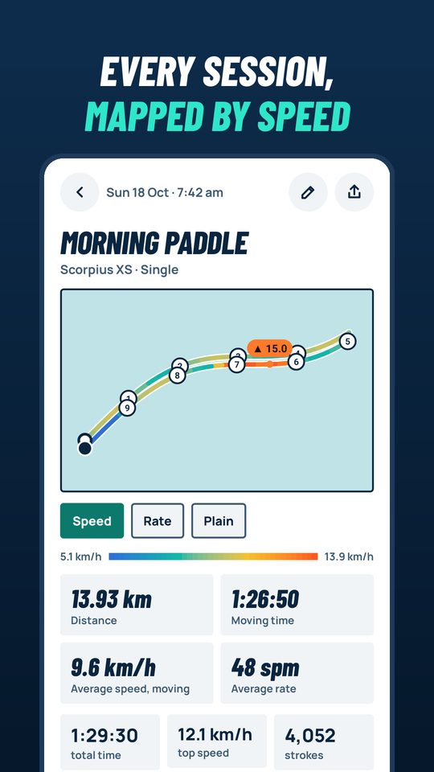
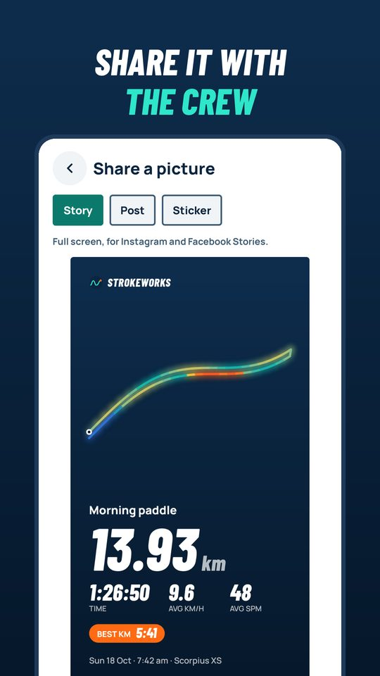

Test Strokeworks
Strokeworks shows live speed, stroke rate and distance from the phone in your boat: outrigger, waka ama, dragon boat, canoe or kayak. We're testing it with New Zealand paddlers before it goes on the Play Store for everyone.
It's free during the test, with every feature unlocked. When it launches, the everyday features (live speed, stroke rate, distance, maps and your log book) stay free, and some training tools you'll try in the test, such as plans, trials and the stroke analysis, become part of a paid Pro version.




Android phones only for now. Got an iPhone? Register your interest with the same short form. It tells us how many paddlers want an iPhone version.
Help shape it
You'll be the first paddlers to use it, and what you tell us decides what gets built next. As a thank you, everyone who stays in the test for the full 14 days keeps Pro free for 12 months after launch. There's no code to enter and no card needed: sign in with Google in the app (Settings > Account and backup) using the email you signed up with, and Pro switches on for your account at launch.
Join in four steps
Use the same Google account that your phone's Play Store uses.
- Tell us about your paddling
Eight quick questions, about a minute. We use your email for your free Pro and test news only.
Sign up - Join the testers group
Sign in to Google and tap "Join group". You won't get emails from it.
Join the group - Accept the test invite
Tap "Become a tester". If it says the app isn't available, wait a few minutes after step 2 and try again.
Become a tester - Install from the Play Store
Install it like any other app. Updates arrive automatically.
Open in Play Store
What we'd love from you
- Take it out on a few paddles over the next two weeks. Open it, tap Start, put the phone in your boat, paddle.
- Please keep the app installed for at least 14 days. Google needs 12 testers to stay in for 14 days before the app can go public.
- Tell us what's confusing, wrong or missing: Settings > Send feedback in the app, or hello@strokeworks.app.
Your data
Your sessions stay on your phone. You can choose to share them with us to help improve stroke detection, or back them up with your Google account. See the privacy policy.